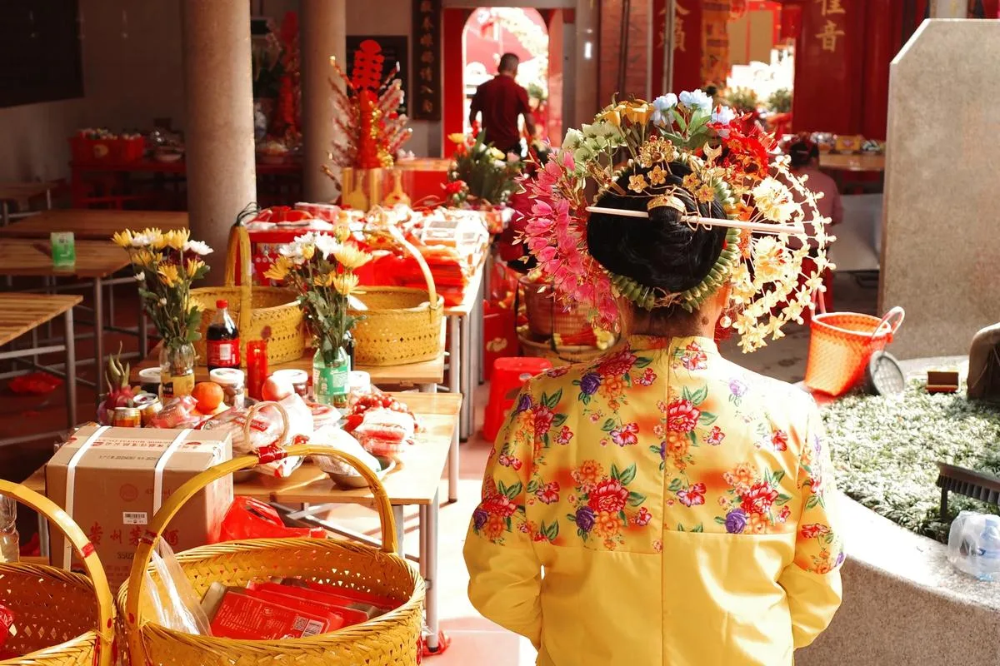

中文原文
www.fjsen.com 2025-08-19 07:48:44 来源：东南网
立秋过后，泉州市丰泽区东海街道蟳埔村依然“热辣滚烫” 。巷子里人头攒动，随处可见簪花拍照的游客和正在开蚝的村民，传统与现代在此交相辉映。文旅热潮下，蟳埔村花香四溢，海味不减，随着“活化传承、跨界融合、赋能产业”的不断实践，这个海滨渔村正持续出圈。
蟳埔民俗文化村位于泉州湾晋江下游入海口北岸，是古代海上丝绸之路重要起点之一，已有千年历史。因扼守泉州出海口的“海门”，宋元时期这里便商贸兴盛，明天启七年（1627年）成为泉州东南海防门户。
近年来，蟳埔簪花围走红，各地游客慕名前来，带火了蟳埔村的文旅产业。
蟳埔民俗文化村保护提升指挥部负责人黄丽媛介绍，目前，蟳埔簪花已亮相世界旅游小姐总决赛、巴黎奥运会、伦敦工艺周等40多场国内外重大活动，传播至英国、法国、意大利、新加坡等30多个国家。“蟳埔簪花绽放海外风采”还被当代中国与世界研究院列为2024年在国际上有影响力的地方文化国际传播七个热点之一。
通过“簪花+”模式，当地将簪花之美融入各行各业。“簪花+文创”，联名签约匹克鞋业、嗨玩购服饰等20多家头部企业，研发摆件、冰箱贴等文创产品200多种；“簪花+美食”，推出泉州“簪花宴”，亮相第三十三届中国厨师节；“簪花+科技”，上线AI簪花写真体验馆，为市民和游客提供全新互动体验方式；“簪花+艺术”，搭建“影视服务中心+影视基地”平台，小品《蟳埔花开》获华东六省一市戏剧小品大赛金奖……
据统计，2023年蟳埔村全年接待游客超450万人次。这个数据在2024年几近翻番，达到850万人次，带动旅游收入超18亿元。
一个面积仅1.5平方公里、常住人口不过7000多人的小渔村迎来了文旅产业的“泼天富贵”。但亮眼数据的背后也隐藏危机：仅靠簪花拍照，如何能长久引来巨大流量和销量？
位于蟳埔村核心位置的橘若·蟳花咖啡厅，是村里新晋的网红打卡点。咖啡厅负责人戴朝聪正忙着招呼客人，为客人指出容易出片的位置和角度。
“不到200平方米的咖啡厅却拥有莫奈花园、中式侘寂风、欧式复古风等多种不同风格，这为簪花拍照提供了更多的场景。”来自广东的游客陈娜燕和同伴头戴簪花围，在咖啡厅里打卡拍照。
咖啡厅旁，一座白色的水塔矗立，塔身上“思源水塔”几个红色大字十分醒目。
“思源水塔是以前蟳埔村的重要供水设施，位于村子的核心位置，四通八达的小巷多数汇聚到这里。”戴朝聪告诉记者，如今，经过改造的水塔华丽转身为集旅居、文创、餐饮于一体的打卡地。
为簪花打卡提供更丰富的场景，这是橘若·思源水塔带来的新变化。丰富文旅体验，延伸消费链，同样也是蟳埔村的发展目标。今年以来，蟳埔村开展簪花里文旅市集、非遗小剧场、浔海乐游·游船码头等十大工程，同时推出簪花、旅拍、问海、巷遇、听音、看戏、品鲜、乐购等八大体验。
“从单一的簪花拍照扩展到看戏、乘船、听音等，不仅是体验内容和消费场景的丰富，更是蟳埔文化的重塑和提升。”黄丽媛说。
在村口的沿街位置，也宋＆腾讯音乐小屋的两位年轻人站在屏幕前一顿操作。
“扫码，输入关键字、一句话或者上传一张图，短短数分钟，就可以完成一首歌的创作，还能用10国语言、15种方言演唱歌曲。”小屋负责人邓慧说，这是AI作歌带给人们的新奇体验。这里是腾讯音乐全省首店，也是十大工程之一，现在已成为游客听音乐、买文创、喝咖啡的新去处，自“五一”开业以来，月销售额近10万元。
目前，蟳埔村有近300家旅拍店铺，游客日均2万人次，带动了文创、餐饮、民宿等多元业态发展，拉动消费超50亿元。截至7月，蟳埔村共接待游客超426万人次。
不只蟳埔村，串点成线，一条6公里长的“滨海浪漫线”正在打造。6月，丰泽区启动“这YOUNG的丰泽 潮燃夏夜”夜经济活动，全力打造富有沿海城市特色的“滨海浪漫线”。从世遗真武庙，到最美蟳埔村，6公里的“滨海浪漫线”串联起文兴宫、浔海夜游、簪花里市集、刺桐港非遗等多个景点，涵盖了海上派对、非遗市集、主题音乐会等多种消费场景，引入休闲茶饮、潮流文创、创意轻餐饮等多个业态，形成“日访世遗 夜游新潮”的双动线，打造全方位的“吃住行游娱购”全链条文商旅服务体系，满足游客的不同层次需求。
夜经济的加入，激发了蟳埔村新的活力。值得一提的是，浔海乐游渔人码头夜市，以音乐市集、灯光秀、烟花秀等簪花海上派对活动，吸引了众多游客，自8月8日夜间活动开展以来，游客量增长40%，预计多创收约15万元。
English translation
August 19, 2025, 07:48:44 | Source: Fjsen.com
Well after the Start of Autumn, Xunpu Village in Donghai Subdistrict, Fengze District, Quanzhou City, remains extremely popular with visitors. Its alleyways bustle with throngs of people. Visitors posing for photos in flower-adorned headdresses and local villagers shucking oysters are a common sight, and tradition and modernity shine in perfect harmony here. Amid the cultural and tourism boom, Xunpu Village is filled with the fragrance of flowers while retaining its authentic coastal charm. Through continuous practices of “living inheritance, cross-border integration, and industry empowerment”, this coastal fishing village is continuously gaining fame across the country.
Xunpu Folk Culture Village, situated on the northern bank of the lower Jinjiang River estuary in Quanzhou Bay, is a key starting point of the Ancient Maritime Silk Road with a history of more than one thousand years. Strategically guarding the "Sea Gate" of Quanzhou’s estuary, it flourished as a bustling commercial hub during the Song and Yuan dynasties, and became the southeast coastal defense gateway of Quanzhou since 1627, during the late Ming Dynasty.
In recent years, Xunpu’s flower-adorned headdresses have gone viral, attracting visitors from all over the world and boosting the cultural and tourism industry of Xunpu Village.
Huang Liyuan, head of the Xunpu Folk Culture Village Protection and Enhancement Command, revealed that these headdresses have graced over 40 domestic and international events, including the Miss Tourism World Finals, Paris Olympics, and London Craft Week, reaching more than 30 countries such as the UK, France, Italy, and Singapore. The campaign “Xunpu’s Flower-adorned Headdresses Shine Globally” was even listed by the Academy of Contemporary China and World Studies as one of seven influential local cultural communication cases in 2024.
Through its signature “Flower-adorned Headdress +” model, the local area has woven the timeless beauty of the floral headdress into every corner of its local industries. It has signed co-branding partnership agreements with over 20 leading enterprises including PEAK Sports and HiGo Fashion, to develop more than 200 themed cultural and creative products ranging from ornaments to fridge magnets. For the gastronomy sector, Quanzhou’s "Flower-adorned Headdress Banquet" made its official debut at the 33rd China Chef Festival. The local area has also launched an AI flower-adorned headdress photo experience studio, offering an entirely new interactive experience for residents and tourists alike. In the arts field, it has built out the "Film & TV Service Center + Studio Base" platform, with the skit Blooms in Xunpu taking home the gold award at the East China Drama Skit Competition.
In 2023, Xunpu welcomed over 4.5 million visitors, generating tourism revenue exceeding ¥1.8 billion. By 2024, these numbers nearly doubled to 8.5 million visitors and ¥1.8 billion in revenue, which is a remarkable feat for a 1.5 km² fishing village with just 7,000 residents.
A small fishing village with an area of only 1.5 square kilometers and a permanent population of just over 7,000 people has ushered in a "tremendous boom" in the cultural and tourism industry. Yet beneath these achievements lies a challenge: Can fleeting trends sustain long-term growth?
Juruo·Xunhua Café, located in the heart of Xunpu Village, is a newly popular photo spot in the village. Dai Chaocong, the café manager, was busy greeting customers and pointing out ideal spots and angles for taking great photos.
“Despite its 200 m² size, the café blends Monet’s garden, Chinese-style minimalist serenity, and European vintage aesthetics, offering versatile backdrops for headdress photoshoots”, said Chen Nayan, a tourist from Guangdong, who was taking photos in the café with her companions, all wearing flower hair wreaths.
Adjacent to the café stands the Siyuan Water Tower. Once the village’s lifeline for freshwater, this landmark has been reimagined as a hybrid hub for accommodation, cultural and creative services, and dining.
Expanding beyond photography, Xunpu is enhancing experiences through 10 key projects, including the Xunhuali Cultural Bazaar, Intangible Cultural Heritage Theaters, and the Xunhai Leisure Cruise Terminal. Visitors can now enjoy 8 signature activities: Headdress Styling, Portrait Photography, Coastal Exploration, Alley Wandering, Musical Performances, Theater Shows, Seafood Tasting, and Artisan Shopping.
“What began as simply taking photos in the iconic Xunpu flower headdress has now expanded to include local opera, boat rides and traditional music. This is not just about enriching experiences and consumption scenarios, but redefining and elevating Xunpu culture,” said Huang Liyuan.
At the village entrance, the Yesong & Tencent Music Hut offers a novel AI songwriting experience.
“Scan a QR code, input keywords or an image, and within minutes, users can compose a song sung in 10 languages or 15 dialects.” Deng Hui, person in charge of the hut, said that this is the novel experience brought by AI songwriting to people. As Tencent Music’s first provincial outlet, this venue has generated nearly ¥100,000 in monthly sales since its May opening.
With more than 300 photography studios and 20,000 daily visitors, Xunpu’s tourism ecosystem now includes cultural and creative products, dining, and homestays, driving over ¥5 billion in consumption. By July 2025, the village had already hosted 4.26 million tourists.
The momentum extends beyond Xunpu: A 6 km Coastal Romance Trail is under development.
In June, Fengze District launched the “This is Young Fengze, Trendy and Burning Summer Night” night economy campaign, striving to build a “Coastal Romance Trail” full of coastal city characteristics. Stretching from the world heritage Zhenwu Temple to the scenic Xunpu Village, this Coastal Romance Trail links up Wenxing Palace, Xunhai Night Cruise, Zanhuali Bazaar, and intangible cultural heritage (ICH) resources of Zaitun Port. It offers diverse consumption experiences like sea parties, ICH markets, and themed concerts, and hosts businesses including casual tea shops, trendy cultural and creative products, and innovative light catering. Visitors can explore ICH during the day and enjoy new experiences at night, meeting tourists’ diverse needs with a comprehensive cultural, commercial and tourism service system covering “food, accommodation, transportation, travel, entertainment and shopping”.
Nighttime activities, such as the Xunhai Leisure Fisherman’s Wharf Night Market with music festivals and fireworks, have boosted visitor numbers by 40% since August 8, projecting an additional ¥150,000 in revenue.